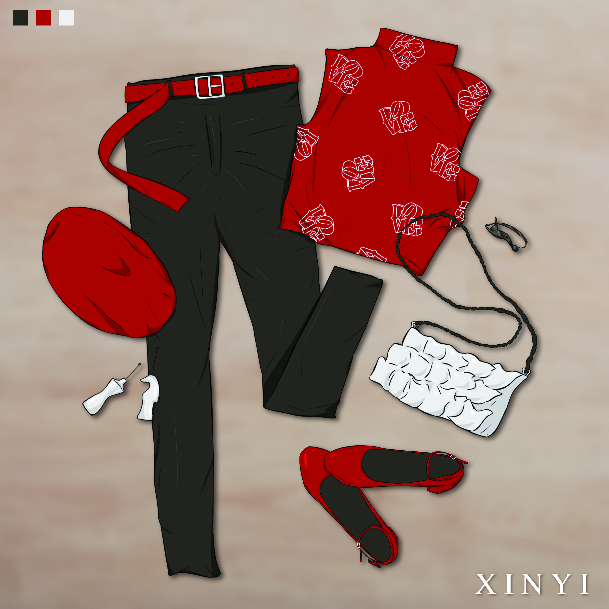

公共藝術路線擬人正式啟動! 霸氣、時尚集結於一身的信義大姊姊首先登場【信義介紹篇】
台北市公共藝術的數量多不勝數，為了更有效的規劃並讓民眾了解公共藝術，城市藝站團隊為台北市的公共藝術規劃出了三條路線，分別是信義商圈、市民大道及敦化通廊，然而公共藝術對大家來說是既常見又陌生的存在，所以為了讓公共藝術變得更加平易近人，城市藝站團隊首先便依照這三條路線的屬性特色，為他們量身打造了擬人形象，不知道當你看到這些角色，會是什麼樣的感覺呢?
首先，公共藝術擬人第一彈出場的便是帥氣十足的信義姐姐啦~信義區畢竟是台北的中心商業區，有「台北曼哈頓」的別稱，更是具有指標性的地區，所以從服裝穿搭上便看得出她的時尚感，我們一起來看看她的基本介紹吧~

性別：女
身高：171cm
興趣：逛街、購物、打卡拍照
喜歡：時尚的東西
討厭：蟑螂、菸味
信義區的規劃可是依照人們的生活習慣來設計，高樓林立不用說，各種金融大樓、大型精品百貨商場、觀光客都會去的台北101等指標建築都設立在此，看看信義，華麗的外貌、爽快的個性都是她揮霍的本錢，平時的口頭禪便是「全包了。」，對她來說，只要她喜歡，沒什麼是不可以的，信義從動作到說話語氣總是這麼地讓人心動呢~
再來說說信義的顏色搭配，紅黑是不敗之時尚配色，紅色凡是搭配黑色總是具有強烈的視覺效果，放眼望去信義商圈中的熱門百貨新光三越的建築設計，還有在台北101旁你一定曾經路過的知名公共藝術《Love 台北之愛 台灣之愛》，這些知名景點都以紅色為主，所以信義便選用紅黑來打造她的時尚美感。
